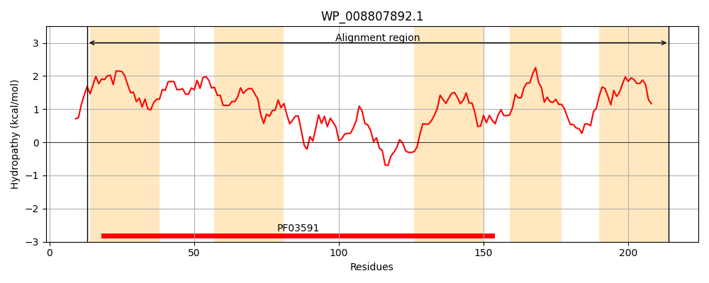
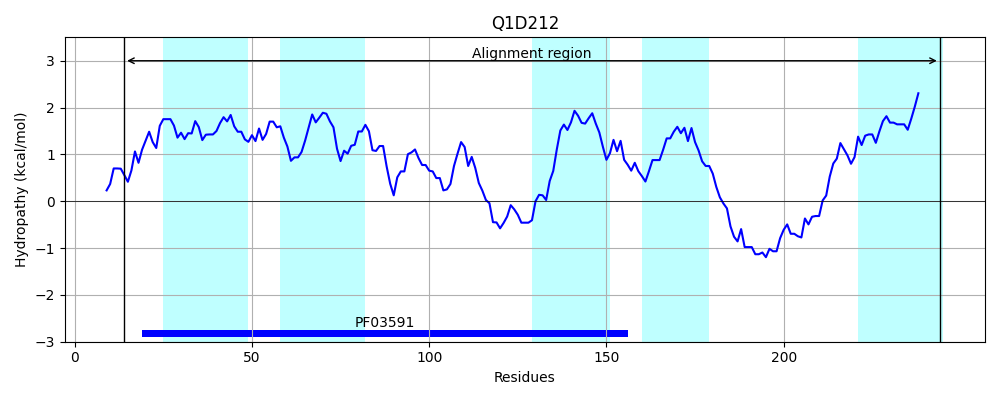
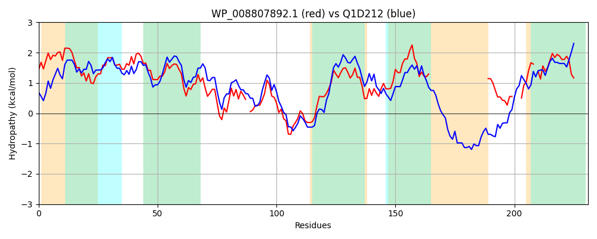

Hit Accession: Q1D212
Hit TCID: 2.A.78.2.3
Hit Description: gnl|BL_ORD_ID|12894 gnl|TC-DB|Q1D212|2.A.78.2.3 AzlC family protein OS=Myxococcus xanthus (strain DK 1622) GN=MXAN_5158 PE=4 SV=1
Mach Len: 231
e:0.000000
Query TMS Count : 5
Hit TMS Count: 5
TMS-Overlap Score: 4.100000
Predicted Substrates:CHEBI:22918;branched-chain amino acid
BLAST Alignment:
Score: 491 , Bit scores: 193 bits, E-value: 4.1e-62, Alignment length: 231, Percentage identity: 46
Query: 13 IKAIVLVCLAVGVVGMSYGSLAVAYGFPLWVPLLLSVSVLAGASEFMFIGIIASGGSPLAAAAAGLLVNARHIPFGVTVRELVGRRAL-SFIGCHIMNDESVVFGLSQPTPAQRKAAYWLCGAGVALIWPLGTLTGAAVGKLLPAPETIGLDAVFPAILLALVIP------------------------AFKNRTTLIRA---ASGAAL-ALAAVPFVPTGLPVLLSLFGL 214
++ + + A V+G S+G+++VA G +WV +SV V AG S+FM +G++A GGSP+AA AGLL+NARH+PFG+ + +++GR L IG H+M DESV F L+Q TP +RKAAYWLCG + + W +G L GA G L +PE +GLDA FPA LLAL++P A + R RA A GAAL ALA P +PTG+PVLLSL L
Sbjct: 14 VRDVAAIAAASSVIGASFGAISVASGLSVWVASAMSVFVFAGGSQFMAVGVVAGGGSPVAAVIAGLLLNARHLPFGLVISDVLGRHWLVRLIGTHLMVDESVAFALAQSTPERRKAAYWLCGGALFVAWNVGVLVGALAGTALGSPEAMGLDAAFPAGLLALLLPSLTAPAKPPNAEPGTAEGEVETARAHEARAAAARARWVAGGAALIALATTPILPTGVPVLLSLLAL 244 | Protein Hydropathy Plots: |
|---|
|  |  |
Pairwise Alignment-Hydropathy Plot:
|
|---|
|  |